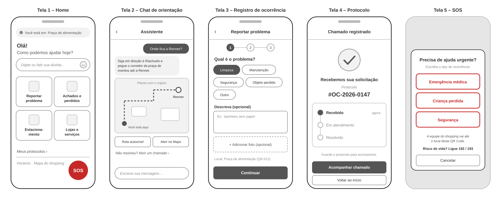
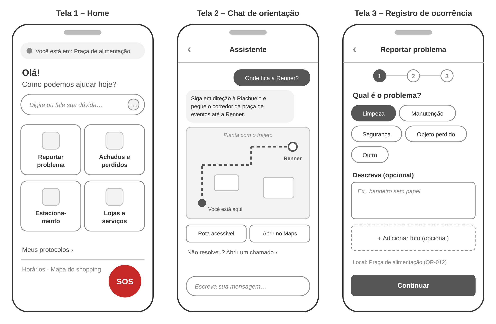
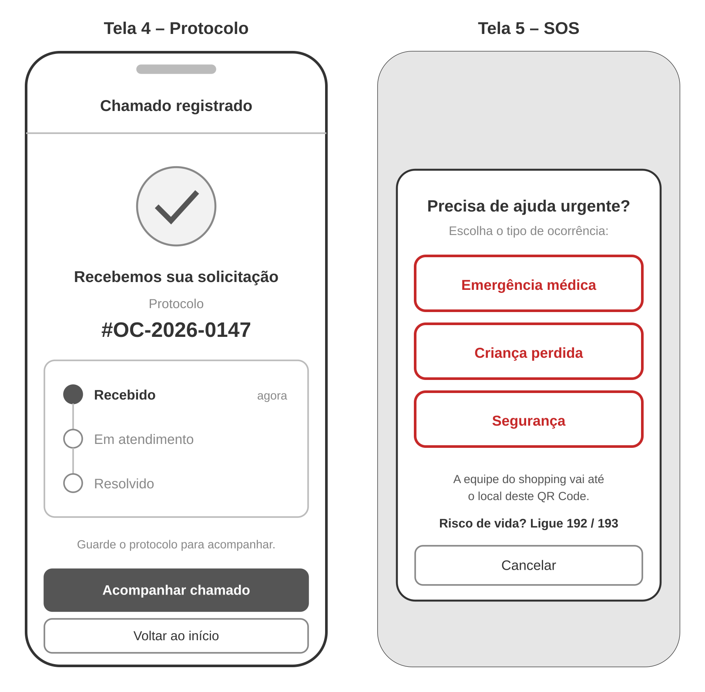
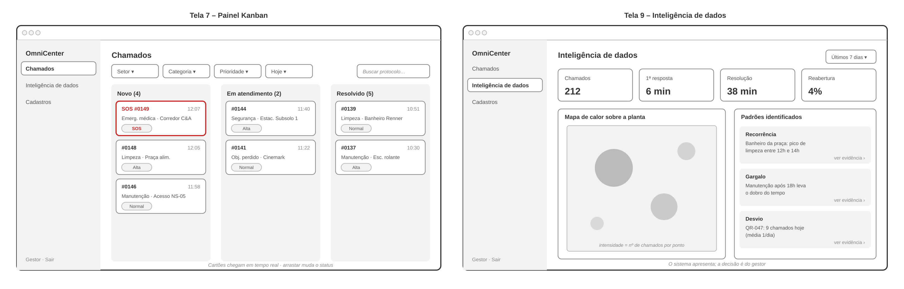
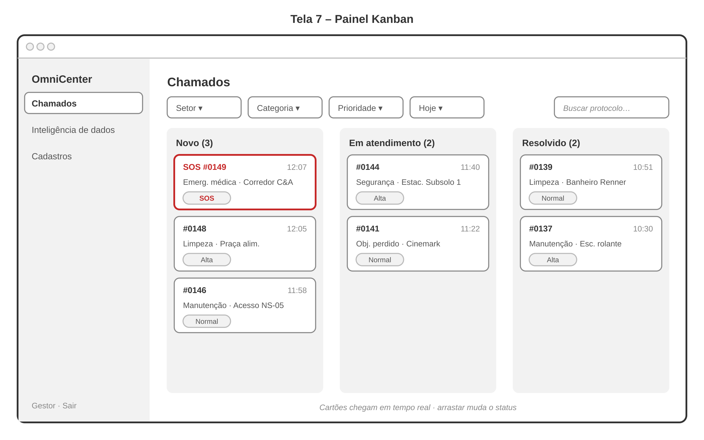
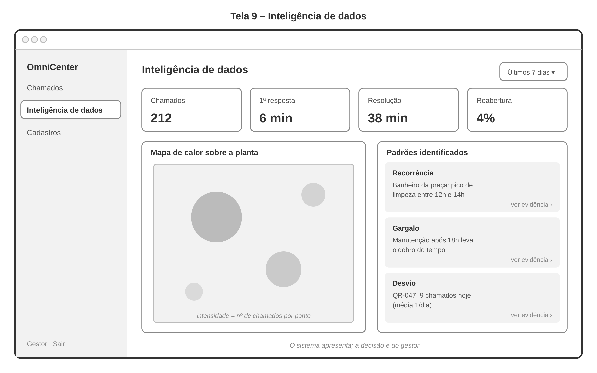
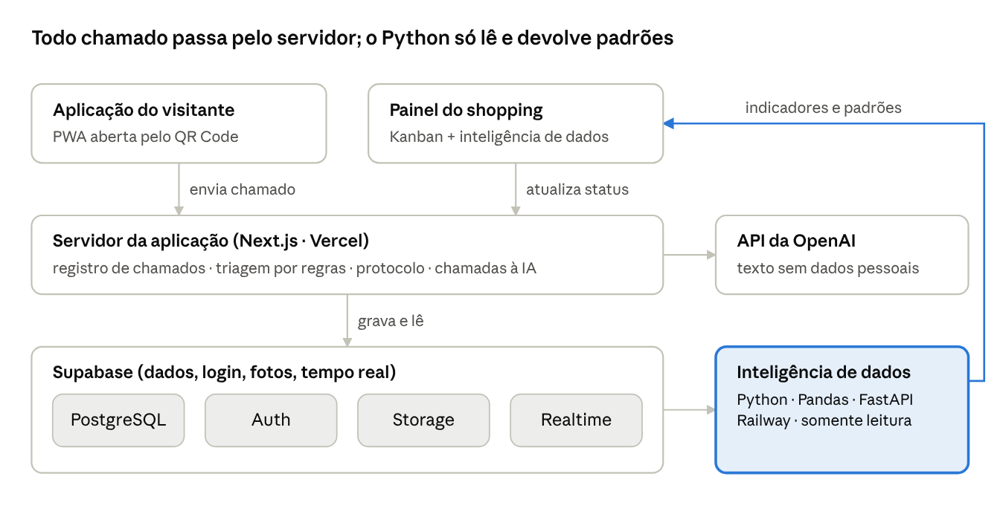

1 Documentação inicial do projeto
1.1 Desafio
- Contexto: os visitantes podem precisar de orientações, informações, registrar reclamações ou resolver situações inesperadas durante a permanência no shopping.
- Problemática: a experiência de atendimento é prejudicada quando as necessidades dos visitantes não são compreendidas ou resolvidas com agilidade.
- Objetivo: melhorar a experiência dos visitantes no acesso aos serviços e no relacionamento com o shopping.
1.2 Problemas que a solução ataca
🔍 Ajuda é difícil de encontrar
O visitante não sabe onde pedir ajuda e precisa encontrar fisicamente um balcão.
🔀 Demandas se perdem
As solicitações chegam por canais diferentes e se perdem entre as equipes.
❓ Sem status nem responsável
Ninguém sabe com clareza o status nem o responsável por cada chamado.
📊 Gestão às cegas
A gestão não tem dados consolidados para enxergar recorrências e gargalos.
1.3 Objetivos e proposta de valor
Objetivo geral: criar um ponto de entrada digital único, contextualizado pelo local do QR Code e ligado a um fluxo operacional rastreável.
Objetivos específicos:
- Dar acesso aos serviços por QR Code, sem instalar aplicativo;
- Responder dúvidas frequentes e orientar rotas com um assistente virtual;
- Registrar ocorrências com categoria, descrição, local e foto opcional;
- Classificar e encaminhar chamados ao setor certo;
- Permitir que a equipe atualize o status e registre as providências;
- Fornecer um protocolo para o visitante acompanhar o chamado;
- Transformar os registros em informação para a tomada de decisão da gestão.
1.4 Perfis de usuário
| Perfil | O que faz | Acesso |
|---|---|---|
| Visitante | Consulta informações e rotas, registra ocorrências, aciona SOS e consulta protocolo | Aplicação pública, sem cadastro obrigatório |
| Operador | Assume chamados do seu setor, atualiza status e registra providências | Painel com login |
| Gestor | Distribui demandas, acompanha indicadores e recebe os resultados da inteligência de dados | Painel com permissões ampliadas |
| Administrador | Cadastra planta digital, pontos de QR Code, setores, categorias e usuários | Área restrita |
1.5 Escopo do MVP
✅ Entra no MVP
- Acesso por QR Code com identificação do ponto;
- Planta digital do shopping com cálculo de rota;
- Home com atalhos;
- Formulário de ocorrência com foto opcional;
- Protocolo;
- Triagem por regras com apoio de IA;
- Fluxo de SOS;
- Kanban: Novo, Em atendimento e Resolvido;
- Login da equipe;
- Indicadores básicos de inteligência de dados.
⏳ Fica para depois
- Chat com base de conhecimento completa;
- Notificações por WhatsApp/SMS;
- Agrupamento de reclamações por assunto;
- Análise de sentimento;
- Previsão de demanda.
1.6 Requisitos funcionais
1.7 Requisitos não funcionais
♿ Usabilidade e acessibilidade
Botões grandes, bom contraste, textos legíveis e rótulos em todos os controles.
⚡ Desempenho
A home deve abrir rápido mesmo com sinal fraco de internet.
🔒 Segurança
HTTPS, login para a equipe, permissões por perfil e chaves de API apenas no servidor.
🛡️ Privacidade (LGPD)
Lei 13.709/2018: coleta mínima, sem cadastro do visitante, fotos com acesso restrito e prazo de retenção definido.
📜 Rastreabilidade
Toda ação da equipe sobre um chamado fica registrada.
💪 Resiliência
Se a IA estiver fora do ar, o visitante continua registrando chamados pelas categorias fixas.
2 Proposta e estrutura inicial das telas
São duas interfaces: a do visitante, pensada para o celular, e a do shopping, pensada para o computador. O visitante sempre entra pela leitura de um QR Code, e o ponto físico já vem identificado.
2.1 Interface do visitante (celular)

Tela 1 – Home
Abre já com o nome do local lido no QR Code (ex.: "Praça de alimentação"), traz a busca "Como podemos ajudar hoje?" e os atalhos Reportar problema, Achidos e perdidos, Estacionamento e Lojas e serviços. Um botão SOS vermelho fixo fica no canto da tela para emergências.
Tela 2 – Chat de orientação
Conversa com o assistente virtual em linguagem natural. Para pedidos de localização, mostra a planta com o trajeto desenhado desde o QR Code lido, usando referências do shopping (âncoras, praças de eventos). Há os botões "Rota acessível" e "Abrir no Google Maps". Quando não sabe a resposta, o assistente avisa e oferece abrir um chamado.
Tela 3 – Registro de ocorrência
Formulário em três passos: escolher a categoria, descrever e anexar foto (opcional), revisar e enviar. O local é preenchido automaticamente pelo QR Code, dispensando digitação de endereço.
Tela 4 – Protocolo
Confirmação do registro com o número do protocolo (ex.: #OC-2026-0147) e o status atual (Recebido → Em atendimento → Resolvido). A mesma tela serve para consultar um chamado depois, com validação adicional para proteger os dados.
Tela 5 – SOS
Tem confirmação antes do envio, para evitar toques acidentais. Opções: Emergência médica, Criança perdida e Segurança. Depois do envio, mostra que a equipe foi acionada e orienta a ligar para 192/193 se for necessário.


2.2 Interface do shopping (computador)

Tela 6 – Login
Acesso da equipe com e-mail corporativo. O que cada pessoa vê depende do perfil: operador, gestor ou administrador.
Tela 7 – Painel Kanban
Colunas Novo, Em atendimento e Resolvido, atualizadas em tempo real. Cada cartão mostra protocolo, categoria, local, prioridade, setor e horário. Chamados SOS aparecem no topo e destacados em vermelho. Filtros por setor, categoria, prioridade e período.
Tela 8 – Detalhe do chamado
Reúne descrição, foto, sugestão da IA e a decisão final da equipe, responsável, observações internas, local na planta e o histórico completo de alterações.
Tela 9 – Inteligência de dados
Indicadores (volume, tempo de primeira resposta, tempo de resolução, reaberturas), mapa de calor sobre a planta do shopping e a lista de padrões identificados, cada um com a evidência que o sustenta.
Tela 10 – Cadastros
Planta digital (locais, níveis e ligações entre corredores), pontos de QR Code (com geração do código para impressão), setores, categorias e usuários.


2.3 Navegação principal
- O visitante lê o QR Code e cai na Home já com o local identificado.
- Pela busca ou pelo chat, resolve dúvidas e recebe rotas. Se não resolver, abre um chamado.
- Pelo registro de ocorrência, envia o problema e recebe o protocolo.
- O chamado aparece em tempo real no Kanban. Um operador o assume, atende e marca como resolvido.
- Os registros acumulados alimentam a tela de inteligência de dados, que o gestor usa para decidir onde agir.
3 Linguagem de programação escolhida
O projeto usa duas linguagens, cada uma no que faz melhor: TypeScript para toda a operação e Python para a inteligência de dados.
🟦 TypeScript – operação
Onde: interface do visitante, painel do shopping e servidor da aplicação (registro de chamados, triagem, cálculo de rotas, chamadas à IA, protocolo).
- É a linguagem nativa do navegador: câmera, leitura de QR Code, envio de fotos e PWA são simples e bem documentados.
- Uma única linguagem para interface e servidor, com definições de dados compartilhadas (chamado, setor, ponto).
- A tipagem detecta erros antes de rodar, reduzindo falhas na integração entre telas.
- Suporte direto à atualização em tempo real — essencial para o chamado aparecer no Kanban no mesmo instante.
🐍 Python – inteligência de dados
Onde: um serviço separado, de apoio à decisão. Coleta os dados, organiza, relaciona, identifica padrões e apresenta resultados ao gestor.
- Não executa nenhuma ação sozinho: não altera chamados, não muda escalas, não aciona equipes. Quem decide é sempre uma pessoa.
- Fonte de dados: exclusivamente o que é registrado pela própria aplicação. Nenhuma fonte externa.
- É a linguagem de referência para análise de dados (Pandas), estatística e aprendizado de máquina.
- Separar a análise da operação protege o fluxo principal: se o serviço de análise falhar, os chamados continuam funcionando.
Exemplos de padrões que serão apresentados ao gestor
🔁 Recorrência
"O banheiro da praça de alimentação recebeu 14 chamados de limpeza na última semana, 70% entre 12h e 14h."
🚧 Gargalo
"Chamados de manutenção abertos depois das 18h levam o dobro do tempo para serem resolvidos."
♻️ Reincidência
"A escada rolante de acesso à praça de alimentação foi reaberta 3 vezes depois de marcada como resolvida."
📈 Desvio fora do normal
"O ponto QR-047 teve 9 chamados hoje, contra média de 1 por dia."
4 Arquitetura proposta
A arquitetura é cliente-servidor em nuvem, organizada em camadas, com o módulo de inteligência de dados isolado da operação. As duas interfaces falam só com o servidor, e apenas ele grava no banco, calcula rotas e chama a IA. O Python lê os registros do banco e devolve indicadores e padrões ao painel do gestor.

4.1 Camadas
📱 Clientes
A aplicação do visitante (PWA aberta pelo QR Code) e o painel do shopping (Kanban, cadastros e inteligência de dados).
⚙️ Servidor da aplicação
Valida os dados, grava chamados, gera protocolos, aplica as regras de triagem, calcula rotas na planta digital e é o único ponto que chama a IA.
🗄️ Dados
Supabase concentra banco (incluindo a planta digital), login da equipe, fotos e a atualização em tempo real do Kanban.
🤝 Serviços de apoio
A API de IA, para interpretar texto, e o serviço Python de inteligência de dados, que só lê.
4.2 Caminho de um chamado
- O visitante lê o QR Code. A aplicação abre já sabendo o ponto físico.
- O visitante escolhe a categoria, descreve o problema e, se quiser, anexa uma foto.
- O servidor valida os dados, grava o chamado e devolve o protocolo.
- Triagem: cada categoria tem um setor padrão. A IA sugere categoria e prioridade, e a regra de negócio confirma o encaminhamento. Casos de baixa confiança vão para fila de triagem manual. O SOS segue sempre uma regra fixa, sem depender da IA.
- O chamado aparece em tempo real no Kanban do setor responsável.
- O operador assume, registra as providências e encerra. Cada passo fica no histórico.
4.3 Orientação pela planta digital
- A planta vira dados: lojas, âncoras, praças de eventos, banheiros, elevadores, escadas rolantes, acessos, caixas eletrônicos, SAC e pontos de QR Code são cadastrados com nível (térreo, praça de alimentação ou subsolos) e posição na planta. Os corredores viram ligações entre os pontos, marcadas como acessíveis ou não.
- Como funciona: a IA identifica o destino pedido; o servidor calcula o menor caminho a partir do QR Code lido; a IA descreve o trajeto usando referências do shopping; o visitante vê o percurso desenhado na planta.
- A IA não inventa rotas: ela só descreve a rota calculada pelo sistema.
- Rota acessível: caminho usando apenas elevadores e rampas, inclusive até a praça de alimentação.
- Google Maps: o botão leva ao destino para quem prefere seguir pelo GPS do celular e indica o acesso externo mais próximo da loja. A rota própria continua sendo a referência para acessibilidade e para a troca de nível.
- Áreas internas: depósitos e circulação de serviço não aparecem para o visitante. A localização da brigada é usada no SOS para acionar a equipe mais próxima.
4.4 Processamento da inteligência de dados
- Coletar: lê os registros da aplicação com acesso somente de leitura, sem dados que identifiquem o visitante.
- Organizar: padroniza categorias, horários e locais e descarta registros incompletos ou duplicados.
- Relacionar: cruza local, horário, categoria, setor e tempo de resolução.
- Identificar padrões: recorrências, gargalos, reincidências e desvios fora do normal.
- Apresentar: entrega os resultados na tela de inteligência de dados, cada um com a evidência que o sustenta, para o gestor decidir o que fazer.
4.5 Segurança e privacidade na arquitetura
🔑 Só no servidor
Chaves de API e credenciais ficam só no servidor, nunca no navegador.
👤 RLS por perfil
Regras de acesso por perfil aplicadas no próprio banco (Row Level Security).
🖼️ Fotos privadas
Armazenamento privado, abertas por links temporários.
📉 Python só lê
Acessa apenas visões do banco sem dados pessoais, com perfil somente de leitura.
🤖 IA mínima
Rebebe apenas o texto necessário para a triagem.
📋 Auditoria
Ações da equipe sobre os chamados ficam registradas.
5 Plataforma e tecnologias adotadas
A stack está definida e usa um único serviço para dados e autenticação (Supabase), sem alternativas equivalentes em paralelo.
| Camada | Tecnologia adotada | Para que serve |
|---|---|---|
| Interface do visitante e painel | Next.js + TypeScript + Tailwind CSS | Telas do visitante (PWA) e do shopping no mesmo projeto, com rotas de servidor para as operações protegidas |
| App sem instalação | PWA (manifesto + service worker) | Abre direto do QR Code no navegador, com opção de "adicionar à tela inicial" |
| QR Codes | Biblioteca qrcode | Cada código leva a um endereço com o identificador do ponto físico (ex.: /p/QR-047) |
| Planta digital e rotas | Pontos e ligações no PostgreSQL + menor caminho em TypeScript | Calcular o trajeto a partir do QR Code e desenhá-lo sobre a planta |
| Banco de dados | Supabase – PostgreSQL | Chamados, pontos, setores, usuários, planta digital e histórico, com regras de acesso por perfil no banco |
| Tempo real | Supabase Realtime | O chamado aparece no Kanban no instante em que o visitante envia |
| Login da equipe | Supabase Auth | Acesso por e-mail corporativo e perfis (operador, gestor, administrador) |
| Fotos | Supabase Storage | Armazenamento privado das fotos, com links temporários |
| Inteligência artificial | API da OpenAI (modelo de baixo custo) | Entender a pergunta do visitante e sugerir categoria, prioridade e setor. Chamada só pelo servidor |
| Navegação externa | Links do Google Maps | Abrir o destino ou o acesso mais próximo no GPS do celular |
| Inteligência de dados | Python + Pandas + FastAPI | Processar os registros da aplicação e entregar indicadores e padrões ao painel |
| Gráficos no painel | Recharts | Indicadores e mapa de calor na tela de inteligência de dados |
| Hospedagem | Vercel (Next.js) e Railway (Python) | Publicação automática a cada atualização do código |
| Código e versionamento | GitHub | Repositório único, revisão de código e histórico |
| Planejamento visual | Miro | Ver item 6 |
5.1 Fases do módulo de inteligência de dados
| Fase | O que entrega | Por que nessa ordem |
|---|---|---|
| 1 – MVP | Indicadores (volume, tempo de primeira resposta, tempo de resolução, reabertura), mapa de calor por ponto de QR Code e padrões de recorrência, gargalo, reincidência e desvio | Funciona com poucas semanas de registros |
| 2 | Agrupamento de reclamações por assunto e análise de sentimento das descrições | Usa o serviço de IA já previsto |
| 3 | Previsão de demanda por local e horário, para dimensionar equipes | Só depois de acumular histórico real e validar o modelo |
6 Incorporação da tecnologia sorteada: Miro
O Miro será o espaço de colaboração visual da equipe durante o planejamento e o desenvolvimento do OmniCenter. Nos quadros digitais, a equipe registra decisões, organiza ideias e representa graficamente os processos da solução.
🧭 Jornada do visitante
Da leitura do QR Code até a resolução do chamado, com os pontos de atrito que a solução elimina.
🔀 Fluxograma do chamado
Registro, triagem, distribuição, atendimento e encerramento, incluindo o caminho do SOS.
🗺️ Mapa de funcionalidades e requisitos
O que entra no MVP e o que fica para as fases seguintes.
🏗️ Diagrama da arquitetura
Arquitetura e integrações da solução.
✅ Quadro de tarefas
Responsáveis, prioridades e andamento ao longo do HackaRun.